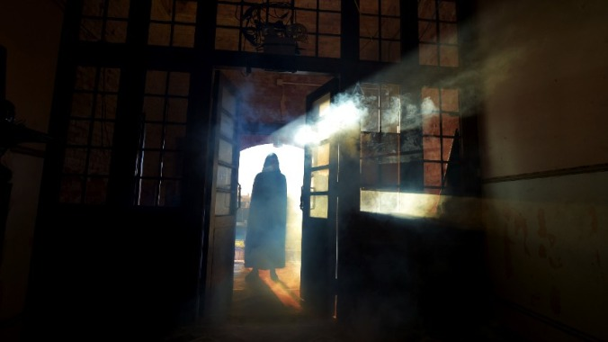

10 True Scary Stories That Will Send Shivers Down Your Spine
The winners of our annual real-life scary story contest are here. Happy Halloween!
Photo: Getty Images EntertainmentIn Depth Scary Stories

The end of October is nearly upon us, which means only one thing here at Jezebel: Our scary story contest is coming to a close, and we’re publishing the winning tales below. We were delighted—and terrified, frankly—to read everyone’s entries; this was a good year, and no I’m not just saying that to flatter you. Our winning stories are a mix of the supernatural, the unexplainable, and perhaps the scariest of all: the very human. We’ve edited these for legibility and length, and they’re attributed to the names your fellow readers posted them under.
Read on at your peril (and if you want to read all 400+ comments on the call-out post, head on over here).
The Dog Door, by Megan
Shortly after my son was born my then-husband and I bought a 100-year-old house for our expanding family, which included the three of us and our medium-large dog. As someone who grew up afraid of the dark (after a strange incident with a neighbor boy looking in my windows as a child), I repeatedly had to tell myself that the creaks and thumps and sounds were normal for a house of that age with old growth trees that bumped the roof and scraped the windows at night, and noisy radiant heat and a back gate that wouldn’t stay shut and clanked in the wind. I’d hear something and instead of investigating, I’d hide under the covers like any reasonable adult. When my then-husband and I split up, I kept the creaky house and he kept the medium-large dog.
When my son was still small, the two of us were watching a movie in the front room around dusk when my phone died. As a Type B personality, the one charger I had was typically strewn somewhere about the house; this time I found it in the kitchen. But as I crossed to the counter to plug it in, I had the overwhelming, goosebump-y, tingly sinking sense that something was very, very wrong. I turned and I realized that not only was the back gate open again, someone was sitting cross-legged in the yard seemingly staring at the house. They had a hood and dark sunglasses, despite the fleeting light, and didn’t move even when I stepped closer to the window to make sure I wasn’t hallucinating. They remained eerily motionless when I was certain they could see me, and still even when I was pretty sure they could see that I had seen them. I quickly locked the back door, grabbed my phone and my charger, and headed into the dining room to my laptop, where I sent the first person I could see online a message that someone was sitting in my yard staring at my house and that my phone was dead and to please call the police if they didn’t hear from me in a few minutes.
I assumed whoever was in the yard would leave once sighted, but nevertheless waited on tenterhooks, impatiently staring at my still-useless phone. After an awkward conversation with my son about why we weren’t going to the kitchen to get a glass of water, it finally lit up and I was able to call 911. I tried to calmly explain to the dispatcher that I was sure the person was gone but begged that they please send an officer to check my yard as the motionless staring was unsettling at best. Keeping me on the phone, she asked if I could look out a window without being seen to verify, as well as check the locked door. I awkwardly knelt-crept as stealthily as I could toward the kitchen, slowly realizing that while the back door was locked, it also had a very clearly too-large dog door with no functioning way to block it. Panicking, I stood slightly in an attempt to scan the yard and came face to face with a hood and sunglasses staring down at me through the window. At this point I was incoherent as the dispatcher urged me to grab my son and hightail it to a locked room. I dart back to him and explain we need to go, now, and as I pick him up I hear the clear and unmistakeable sound of the dog door slowly swinging open. I abandon the house, leaving the front door wide open and dashed across the street to pound on my neighbors’ door. Once inside, they kindly paused their dinner party to distract my son while I stared across the street and messily sobbed about our very indoor cat we left behind.
Not long after the officers arrived, they came through the side gate with hood and sunglasses in tow. They’d apprehended her calmly sitting on my back step, her arm lazily, purposefully swinging in and out of the dog door. I boarded the dog door shut that night, but we moved shortly thereafter as I was never quite sure after that if all the nighttime knocks and bumps and open gates I’d been hearing were actually just the old house.
‘Please Just Go,’ by Cloud Dancing Texan
My cousin was shot and killed in the late ’90s. He was very young, only 21, a victim of mistaken identity. He and I got along well, and I loved him, of course, but we weren’t particularly close, so when I started dreaming of him constantly, it was unnerving and very draining.
Years passed. I got married, had a son, moved a couple of times, but I’d still have very lucid dreams of him. It was exhausting.
One afternoon, I fell asleep on the couch in our living room while my son played quietly on the floor. My husband had night school, so he didn’t get home until 9 or so, so it was just our son and I that were home.
At some point…I realized my son had stopped playing. We just stared at each other. There was a strange sort of tension in the air.
While I napped, I had one of those very lucid dreams. I was as I was, napping on the couch, but knew he was approaching our house. I knew, in the dream, that he was dead. The knowledge filled me with a paralyzing feeling of dread. I couldn’t move and was very afraid as he walked up our driveway. I could see his shadow walking past the front windows, saw his silhouette through the frosted glass of our front door. In my dream, my son, only a toddler, saw him and stood up and began to approach the door. I couldn’t call out to him, warn him away. My son babbled and my cousin cocked his head at the sound.
Somehow, I was able to move and I enveloped my son in my arms and silently pleaded with my cousin, “I’m so sorry, Steven, but please, please… I can’t… please go. Please just go.”
I saw his shoulders slump and he turned away. I felt terrible, but the fear would not let up. I peeked through the window beside the front door and saw him walking away, turning the corner by our garage and then I startled awake.
I looked around outside, through the window. All was normal. My son was still playing on the floor. Everything was OK.
I picked up a book I’d been reading to take my mind off my disturbing dream. At some point, I set it down and realized my son had also stopped playing. We just stared at each other. There was a strange sort of tension in the air. A ringing in my ears.
Suddenly there was a loud crashing sound. Our glass screen door had shattered.
Just Up the Stairs, by Whatshername
Back in the late 2000s, I was in my early 20s and living happily for a few years as a broke expat in Berlin. One of my roommates (who was from the U.K.) and I were out late-ish seeing a band play (maybe around midnight or 1 a.m.), and afterwards we were headed home, walking through a relatively central but quiet part of the city, towards a subway station entrance.
We were in high spirits after a couple drinks and a fun night out—not too drunk, just a little tipsy—and we were laughing and chatting, probably somewhat loudly, as we headed arm in arm towards the subway entrance, which was ahead of us down at the far end of a long, quiet street. It was late October/early November and still warm enough for it to feel nice to walk outside, and the misty air hung in yellow halos under the streetlights. Just as a little gust of wind blew some leaves across the pavement in front of us, we both became aware of a figure walking ahead of us in the mist. From the back it appeared to be an older woman, stooped over, carrying bags in each hand, and walking with a very pronounced limp, sort of dragging one of her legs along behind her. We were speaking English, and nearly about to pass around her on the sidewalk, when the woman cried out rather exaggeratedly (in English, but with a thick German accent), “Oh, help! Won’t SOMEbody help me!”
She didn’t sound frightened or worried so much as deeply…demanding, and her tone of voice suggested she expected to be helped. My roommate tried to keep us moving ahead past her, but I softened and slowed down my pace, because after all, this was an elderly woman, carrying bags late at night, and she clearly couldn’t walk very well. I asked her what she needed help with, and she said, “It’s my leg! Help me carry the bags! I live just over there!” and she nodded towards an apartment building entryway a half a block up the street. My inner good Samaritan instincts kicked in and I responded automatically, “Oh of course we’ll help you!” My roommate seemed decidedly less enthused for some reason, but begrudgingly followed me as we each grabbed one of the woman’s bags and carted them to the doorstep up the street. As the woman’s face came into sharper relief underneath a nearby streetlight, I realized that she looked EXACTLY like a witch out of a German fairytale: bent posture, a large wart on her nose, greyish-white straggly hair, and she was wearing dark wool clothing with a hood. I was honestly taken aback by her appearance and nearly gasped out loud, but again, wanting to be polite, I pushed this to the back of my mind. Who cares what she looks like, I told myself, she’s just an elderly lady who needs our help.
When we arrived at her building’s doorstep, the entryway door was surprisingly ajar (not the norm at all in the neighborhood we were in) and she pushed it open easily, suddenly seeming to possess more strength than she had had moments before, and leaned forward to hold it for open me so that I could go in first and she would be behind me. She gestured up a dark and dingy flight of stairs, and breathed “just up the stairs, just up the stairs…” I froze in my tracks for a second in the doorway, as my tipsy 23-year-old brain tried to puzzle it out. Logically, the polite thing to do would be to carry the bag up the stairs for this woman, right? But then again, all the hairs were standing up on the back of my neck, and the building’s hallway and narrow staircase, in the dim fluorescent yellow light, looked awfully foreboding. I could just make out a doorway at the top of the stairs on the righthand side that was also slightly ajar, leading into an apartment. An air of intensely stale, musty smoke wafted down the stairs. And then there was the tone of stark urgency in the woman’s voice as she urged me to step fully inside and get up the stairs as quickly as possible. If I had to describe her tone, it wasn’t too far from the voice of a cartoon villain rubbing their hands together while hatching a nefarious plan.
As I stood in the entryway, tipsily trying to weigh the Very Bad Feeling in the pit of my stomach against my lifelong fear of being impolite, I actually giggled at how absurdly horror-movie-esque the moment felt—so much so that it couldn’t be a real threat, right??? It was too spot on, so I must be imagining it. Fortunately my roommate, who had seen more shit in her life than I had at that point, literally yelled out “oh HELL no,” hooked her arm into mine, and pulled me out the door and down the street as quickly as possible. The old woman yelled disappointedly after us as my roommate whisked me across the street and down the subway stairs, back into the safety of a warm, brightly lit public space full of people.
Once we had safely escaped, my roommate shared the two things that had set off definitive alarm bells in her head: 1. She was certain that the woman’s “limp” wasn’t there initially as she walked ahead of us, and that it had only appeared as we got closer to her, and 2, in her words: “As you stood in the doorway, I suddenly knew that she had a creepy adult son waiting for us at the top of the stairs who was going to chain you to her bed.” Perhaps it was just our fanciful imaginations, but I have always felt grateful to my roommate’s instincts for keeping us away from whatever was at the top of those stairs.
That’s Not a Cat, by Salla
My rural neighborhood is home to a large feral cat population, and I always keep food and water out for them on my deck. Last spring, I woke up in the middle of the night to use the bathroom. I sat down to pee and looked out the window, which has a clear view down over the deck.
Looking down at the deck, I saw a large figure at one of the bowls. I was half-asleep, and it was quite dark, though there was some ambient light from our garage, and at first I thought it was a raccoon, or a giant skunk, or maybe even a coyote. Then, with the most skin-crawling sense of horror, I realized it was a human man crouched on all fours, eating cat food out of the bowl with his mouth.
I whisper-yelled to my husband with, I guess, enough panic in my voice that he immediately got up and came into the bathroom without asking why I was whisper-yelling for him at 2 a.m. and kind of spluttered and pointed out the window. He looked out and I could see the same reaction play out over his face in the few seconds it took him to realize what was going on: It’s a large cat; no, raccoon; no, coyote; no, WTF, it’s a human?!?! I called 911 and told the dispatcher there was a strange man on our porch acting suspiciously.
“Ma’am,” he said, “What do you mean ‘suspiciously?'” I told him there was a guy eating cat food out of a bowl with his mouth (no hands!) on the back deck. He said he’d send a patrol car right over. Meanwhile my husband tiptoed downstairs to get a baseball bat from a closet, and I continue peeking out the window to keep an eye on the dude, barely believing what I was seeing. At some point I suppose he must have stopped eating—there wasn’t that much food out to begin with, and unless he was eating kibble by kibble, he would have finished very quickly. But he remained in the same hunched, crouched position over the bowl, the back of his head and his face obscured by the hood of his sweatshirt.
Then, with the most skin-crawling sense of horror, I realized it was a human man crouched on all fours, eating cat food out of the bowl with his mouth.
After what felt like hours, but was actually more like five or six minutes, we saw headlights approaching from down the road. Our visitor must have seen them too, because he got up, easy as you please, walked off our deck, and disappeared into the shadows at the edge of the yard.
We had a cruiser parked in our driveway for the rest of the night and the next morning, installed motion-activated lights and a camera. We took the cat food off the deck at night for the rest of the month. We haven’t had an unwelcome visitor again, but I will always be afraid of looking out the window in the dark and seeing a man instead of a cat.
The Night Terrors, by Chaotic Insomniac
Many, many years ago our son went through an extreme night terror phase that gradually morphed to include sleepwalking. He was only 3 at the time and not very articulate yet. He didn’t seem to remember the night terrors and wasn’t afraid of being alone in his room or even of going to bed on his own. Thither he would go, without any prompting, and we’d go check on him and see his little sneakers neatly placed beside his bed, and him curled up under the covers in his PJs.
We found that having him sleep in bed with us prevented these episodes altogether. So for weeks, we did just that. It was a bit of a squash but definitely beat the alternative.
But shortly after we resorted to this “fix” was when the sleepwalking began.
One night I felt him clamber over me, and groggily I assumed he had to go to the bathroom and almost instantly fell back to sleep. I woke to his terrified screams, disoriented about where he was. My husband found him, shaking uncontrollably, next to his bed, eyes dilated and blank with horror. We carried him back to our bed, holding him close, and waited for him to fall back asleep.
This continued to happen off and on for weeks before my mom brought a lady who was a self-proclaimed “curandera,” or witch doctor, to our home and had her “cleanse” it. She said our house had a lot of negative energy from previous tenants and restless spirits of small children who had become attached to our son. This was all horrifying to hear. We had experienced odd things but none more disconcerting than our son’s night terrors.
The night terrors stopped after her cleansing, but other activity kicked up, and we continued to have our son sleep in our room, terrified that he’d have another episode.
Some of the other experiences were knocks within the walls. Doors opening on their own. Pictures flying off the wall. Doors slamming shut as you approached them, though no one was on the other side to have been able to slam them. We once experienced seeing the shadow of a person, a man, walking around the house, but when we peeked outside there was no one there.
The last straw was when the both of us had the same nightmare, woke drenched in sweat, and seeking comfort from the horrifying dream, only to tell it and realize we’d been dreaming nearly the same thing.
In the dream, we were across the street, talking to our neighbors when they pointed out that our house was on fire. We looked back and saw that the house was enveloped in black smoke. We could see our son banging his fists helplessly against the front bay window. Panicked, we rushed across the street and into the house searching for him. In my dream, I found him and held him tightly to me as I ran back outside to safety, only to realize the bundle I held in my arms was his baby blanket and not him. I stared back at the house in time to see it collapse in a fury of flames and woke up screaming. My husband dreamt he went into the house and could hear my son crying out for him and couldn’t find him. Then he heard a soft “daddy” and reached down and grabbed him up and ran outside. As he ran he realized that our son felt very light in his arms and when he looked down he saw he was only holding a teddy bear.
Needless to say, this rattled us even more. We promptly moved out, staying in my parents’ small guest room until we could sell the house. It wasn’t on the market long, and wanting to be up front about our experiences, we told the buyer against our realtor’s advice. He was a much older man who planned to use it as a rental property and waved off our experiences as “nervous nonsense.”
Just Doing Its Job, by Jen yerty
This was a decade ago now, at a very difficult time in my life. I had moved to Northern California from the Pacific Northwest for grad school, living in a shitty studio provided by the school with too much stuff in it, no real chance to make friends yet. Unemployed for the first time in my adult life, living off what I could scrounge from odd jobs.
I had acute PTSD that I believed at that time was going to kill me. I had been suicidal for years before this, and that made it worse.
On the afternoon this happened, I was laying in my bed on my side, facing away from the wall, with the one window above my head. California sunshine, sounds of campus outside.
I was drifting in and out of a nap when the previously warm and brightly lit room went cool, silent, and dark. Weird, but maybe a lull in traffic, a cloud over the late afternoon sun.
But soon, I felt more, then saw a black shadow behind me. Almost as soon as I sensed the being, I don’t know what else to call it, I felt it try to enter me and felt the most pain I’ve ever experienced.
This wasn’t sexual at all. Instead, it felt like the black shadow was trying to float into my body, to possess it or just to satisfy its curiosity, I have no idea. But it hurt so badly, like every cell on my body was on fire. I didn’t dare turn around, I didn’t think I could face what I’d see, and I didn’t know anything else I could do to stop it, because it felt imperative to stop it, my whole body was screaming. I could even feel my face form a scream but nothing came out. The only thing I could think of to do was to just tighten every bone, muscle, tendon, cell in my body and try to force it out. Or at least stop its progress.
So that’s what I did. And it kind of worked. At least, that pushing-through feeling stopped for a second. It started up again and I tightened even further, my body in so much pain from the intrusion that the tightening was almost a relief. And it stopped again.
I became aware that I had a sense of a silent emotional response from the being as I relaxed a bit and it attempted to intrude once more, but more tentatively this time. I tightened once again, and I felt this sense of confusion from the being as they withdrew their…hand? Body? from mine. They were genuinely confused and somewhat concerned about why I was doing this, why I wasn’t allowing them in. Something wasn’t going according to what they had planned or expected.
I saw a shadowy part of them pass over me out of the corner of my eye. They seemed to be moving over my body, checking it out. I could feel their presence above my skin, and get a sense of the size of them. They were just this cloud of black, darker in some parts, but almost see-through in others. They tried one last time, just a tendril. But I knew what worked at this point and tightened again, and the being withdrew their tendril and disappeared.
The room was suddenly light again, I could hear sound outside just like before. But I still didn’t dare move for quite some time after, terrified it would come back.
It never did.
But I still didn’t sleep for weeks. I still struggle to lay down for a nap. What if it comes back?
I don’t know what it was or what it wanted. I spent many of those sleepless nights searching online, but got nowhere. It’s honestly hard to get good results when you google “dark shadowy thing tried to enter me alien ghost” as it turns out.
It seemed like most people would think it was sleep paralysis or hypnagogic hallucinations but I’ve read about all of those, and it doesn’t fit what I felt. I could move enough to tighten, I could feel my face make expressions, I could move my eyes. And I could feel it. Feel its emotions. Which felt very simple, with no malice at all. Like it didn’t want to hurt me and it was really puzzled that it realized or suspected it had. It seemed like the being expected me to be asleep or—and this is what it really felt like—dead.
I don’t know if one of my suicide attempts that year wasn’t supposed to have been survived and I got on some sort of list, but got spared somehow. Or maybe someone a few apartments over was a few minutes late to their final exit because their ride was delayed by me. Or if it was an alien of some kind. It definitely did not feel human in any way.
I truly hope I’ll never meet it again, until it’s my time to go. But I honestly wish it well. It scared the absolute crap out of me but I really don’t think it meant to. Its actions, whatever they were meant to do, felt remarkably simple and neutral. Like it was just doing a job and corrected its mistake when it realized it. The job was just possession.
The Kayaking Trip, by Marge6786
Four years ago, my husband and I took an anniversary trip to the Upper Peninsula in Michigan. It was early-ish pandemic days and the opportunity to be free of the tornado of constant home/work/parenting a toddler was as great as the lakes we’d hoped to explore.
We split the trip into two parts: one part outdoorsy, one part relaxation. We started out kayak-camping on Lake Superior, just off Pictured Rocks National Lakeshore. We had a remote campsite out on Grand Island that we would paddle to in our sport-level, inflatable kayak, carrying all our food and gear for two nights.
The paddle to the campsite had been challenging, but doable. We were medium-level kayakers, so after about three hours of travel with some poking around the island mixed in, we were very ready to settle in.
The campsite itself was stunning; it faced a large bay that then opened out onto Lake Superior, beautifully framing the horizon in a way that felt almost fake. Off in the distance, you could barely make out the edge of Pictured Rocks. The wolves howled and laughed throughout the night as we sat around the fire, the woods around us lit only by glow lichen.
After a beautiful first night, we woke up with the shining sun to enjoy the view, shake off the boxed wine hangover, and drink coffee before heading out to adventure. We made a loose plan to kayak towards Pictured Rocks, which involved a short open-water crossing that was potentially treacherous, but worth it to get to where we wanted to go.
To our surprise, we nailed the open-water crossing in a little over an hour. It was challenging, but the famous Lake Superior waves proved manageable, and our arms withstood the power of the current. We spent the rest of the day poking along the coastline, taking in the breathtaking rock formations and arches, soaking up the sunshine, and stopping at various beaches for exploration and snacks. At around 3 p.m., we decided to head back to the campsite to get settled in for the evening.
As we stood on the beach plotting our way back, we noticed that the rental kayak bros were busy hauling all the kayaks up to a shelter. We figured since it was late September, they were likely closing early due to a light, end-of-season day. The tourists had also slowly trickled away and we were left mostly alone.
There were two options for heading back: The first was to go back the way we came along the coastline and then repeating the same open-water crossing we had done that morning. This would also take us against the current, meaning we’d be working a lot harder and adding time when we didn’t necessarily have the daylight to spare.
The second option was to take a straight line through a much larger open-water crossing back to the island, which we could see plain as day ahead of us. It would be a much shorter and direct route. In our eagerness to get back to camp and still feeling ourselves over how well we’d been doing, we chose option two.
We started out and were feeling strong as we paddled along. The waves were picking up a bit, but that was to be expected once we got to the open water. We took a quick break and finished up the last of our snacks, confident that we would be back to camp in an hour or two to re-fuel our bodies.
We’d been at it for probably an hour and the weather was…turning. The sun disappeared and the clouds began to spit rain—or was that mist from the waves that were gradually splashing higher and higher around us? The wind had picked up to a steady clip right into our faces. The water was cold.
I can’t pinpoint exactly when I realized we weren’t moving forward anymore, but I remember looking over at the rocky coastline far to my left and realizing the particular rock that I’d been tracking for a while had not moved even a little. It was still in the same spot it had been the last time I looked at it. And the time before.
We were silent, neither of our stubborn asses ready to admit that we may have gotten in way over our heads. We plowed on.
Another hour passed. Or was it two? The minutes really did turn into hours as we kept paddling and paddling forward and getting seemingly nowhere. I was positioned in the front of the kayak, trying to keep us moving as much as I could, but the wind had other ideas. I scanned every direction and there was nowhere to go that would allow for a safe landing—there was a rock wall on one side and thick brush on the other, both options very far in the distance. There was not another boat in sight. My husband pulled out his phone but had absolutely no signal.
We kept paddling. My husband was in the back, working his hardest to steer us in a straight line. At one point he shouted to me over the din of wind and spray: “Give me your water bottle!” I obliged without question and turned enough to see him open it up and dump its contents into the lake.
“What the fuck are you doing?!” I screamed, my survivalist instinct to ration our water having kicked in somewhere along the line.
I then saw why he needed it. He was sitting in about six inches of water. Sixty degree, late-season Lake Superior water. And he’d been in it for what was likely about two hours (or was it?). Since he was heavier than me, it had all pooled around his end and I hadn’t noticed it. He started to use my empty water bottle to try and bail out the kayak while simultaneously paddling to keep us in a straight line. Unsurprisingly, this did not work. He chose paddling over bailing out and we continued on.
Again, we fell silent as we bore down. We just kept paddling. And paddling. The waves got higher and higher—white caps sprawling out in front of us like an obstacle course we had to win in order to get to safety.
My arms were absolutely on fire and my back ached from hunching forward. I didn’t know how much more I could handle. Resting wasn’t an option. Rest meant the wind pushed us back, undoing any forward progress we had worked so hard for. I thought about our son. I thought about our house. I thought about my parents. I thought about my job.
It was getting darker by the minute and the waves kept coming. We were amateurs to rough water, so every wave proved a teachable moment. I was now sitting in about six inches of water, which meant my husband was getting close to waist deep. My watch had died somewhere around hour three, but I didn’t dare ask for the time.
Through either telepathy or just practice after 10+ years of communicating with each other, we each silently decided our only option was forward. We just had to get into the bay that led to our campsite. The water and wind would be calmer there.
So we kept going. We occasionally shouted words of encouragement to the other over the howl of the wind, but we were mostly quiet. I thought about how deep the water was. I thought about how stupid we were. I thought about the cozy Airbnb we had booked for the next leg of the trip. I thought about the kayak rental bros packing it in early since it was obvious to them the weather was going to turn.
And then I looked up and the island was upon us. I wasn’t sure when or how it got there. It was nighttime dark now and I could see the silhouette of its tree line in the occasional low moonlight that poked through the clouds. We were entering the bay and we each let out a tentative sigh of relief.
When we finally pulled up onto the island, we both rolled out of the kayak and flopped onto the beach. We couldn’t move. We finally figured out the time and it was after 8 p.m. The whole thing had taken over five hours. We had made it, but it didn’t feel like a victory. We had fucked with Mother Nature and she had damn well almost won.
It wasn’t until this moment that we realized we were bordering hypothermic. Each of us were shaking uncontrollably and making little sense as we blabbered to each other and tried to address our many needs.
We stripped naked, just right there in the open. We found blankets and mustered a little fire. We ate whatever we could get our hands on and drank water, then boxed wine. And we re-capped what turned out to be the dumbest decision we had made in the 11 years we had been a duo.
We spent the rest of the night figuring out how to get off the island in the morning. We both had kayak PTSD and had no desire to make the trip back any longer than it needed to be. In the end, we portaged the kayak and all our gear to a broken down dock on the opposite side of the island to shorten the return trip. When we finally got back to the car on the mainland, I cried.
For days after, whenever I sat still, I could feel the waves of Lake Superior tossing me around. And with that phantom up and down, back and forth came that feeling of hopelessness. The feeling that I was powerless against the forces of nature. One does not mess with the big lake they call Gitche Gumee.
We celebrated our next anniversary at a nice hotel here at home. We have not been kayaking together since.
The Neighbor, by A Good Band Name
This story didn’t exist even three days ago. I’ve made a burner account specifically to talk about it since it is still an ongoing investigation. I am also going to use pseudonyms and keep this story more vague so that it remains anonymous. I just can’t stop thinking about it; it’s devouring me.
I live in a large, wealthy metropolitan area in a newer built mid-rise condo. The majority of residents skew midlife or older and are uniformly white collar professionals or retired. That is to say, this is a “very nice” building in a “very nice” neighborhood.
Monday after work, I got off the elevator and was hit with a smell. I got to my condo and told my spouse Taylor that either somebody had overcooked Brussels sprouts, or somebody had died. Taylor ran errands Tuesday and confirmed that it certainly “doesn’t smell right in the hallway, that’s for sure.” I don’t know what a dead body smells like, and that seems terrifically unlikely, so we go on about our lives.
There was a cold rainy snap this past week, and the smell kind of comes and goes, but it felt like it would be a rude thing to complain about to management. We just ignored it and knew it’d go away like every other burnt meal somebody made.
Saturday was sunny and warm. Taylor was doing minor work in our unit so they are back and forth all morning between our unit and the courtyard on a lower floor.
The first time they come back they say, “That smell is back and it’s worse.” We both half-jokingly muse about how it’s a body.
The second time they come back, I hear voices in the hallway when they open our door. Our building is usually very quiet, so I ask if someone is finally having a party. “There’s a group of neighbors going around to all the units in our hall to see where the smell is coming from. Somebody on the floor below tried to show a unit today and the smell when they opened their door was so bad they couldn’t go in.” Do they think it’s a body? “Yeah, that’s the consensus.”
The third time Taylor comes back, they confirm the unit has been identified and the owner contacted. Riley, an HOA board member, is fetching the set of spare keys for the unit, three doors down from ours, smack between us and the elevator. There are more people in the hallway.
Then all hell breaks loose. Suddenly the smell is 10x worse and unbearable when Taylor opens our door to the hall. Everyone in the hall is now wearing N95s or covering their faces some other way. Taylor talks to Riley, who just went into the unit and saw enough to confirm the authorities need to be called before they got back out and shut the door. Taylor asked if it was, in fact, a body. Riley confirms, visibly shaken. We’ve been smelling corpse odor all week. The body had been rotting there, right in our densely populated building.
Every time someone opens that unit door, the smell floods out. Cops have showed up and are asking routine questions to the neighbors. We overhear them say the body was found in a bathtub, that CSI has been called, and they need to search the deceased’s car. The smell is so bad I barely make it out of my unit before I run back and have a mild breakdown. Finally we get out and evacuate the building for the day. I do not want to go back home, so after hours in the city we return to sit in the courtyard with some neighbors and drink and talk. A few are pulled to be interviewed; the cops want their doorbell camera footage to try and determine when the deceased was last seen alive. We watch as CSI flashbulbs go off from the unit. The police in the building are wearing respirators now. The unit below it has all its windows open to air out. We decide to go to dinner. We leave the building and run smack into the coroner. I badge them in and hold the door for the gurney and body bag, seven hours after the discovery was made.
It would be freaky enough if that was the end. It’s not.
All the usual questions aside (why did no one notice they were missing for more than week? Did they not have a job? Family? Friends?), strange details start emerging. The deceased was a one-bedroom renter in our building since it was built 18 years ago, the past nine years in the unit where they died. According to Corry, who shared a wall with the deceased and who knew them cordially but not enough to know their last name, they were a retired military veteran, and there was hardly any furniture in the unit, just a single chair in the main room, no table or anything. Riley confirmed this and also told us there was a handwritten note on the refrigerator: “In case of emergency, call the VA.”
Yesterday, a resident ran a background check on the unit and shared it with me. The resident was in their mid-50s—not exactly “die of old age” age to me. They did live in our building all this time, and in a few states before that, back to the early 1990s. But all the “known associations” are people who live in states far away; in fact, none are even remotely in our area. Their LinkedIn is sparse, though it does show current employment (that we assume is out of date, as Corry believed they were fully retired) and a military history, but there are no interactions and the Contact info links back to the LinkedIn page itself. So what did they do for the last 18 years? Nothing? Met no one? They have no social media we can find. The police don’t seem to be doing much better, given that they’re coming around to us asking the same questions.
What’s more, our building is undergoing construction and we currently have a fire marshal on duty 24/7, who periodically makes rounds on all the floors. In all my time here we have never had 24/7 guards of any kind, and for them to be on duty when there’s a death of unknown time and origin strikes me as odd. With more eyes on the place, you’d think they would’ve seen something. But I guess none of them ever saw him or noticed a smell.
But then it got really freaky. On Sunday, a full-on trail of blood showed up leading from the main lobby into the elevator and onto our floor. It surely can’t be from the corpse that left the day before. And again, the fire marshal who sits by the door seems to have missed whoever was bleeding all over the place coming in from outside. Emile complained to the board and the board told them they don’t know what to do about it except wait for the cleaning staff to do it on Monday, so Emile and Corry clean our floor lobby of the bodily fluids themselves.
The police came back yesterday for more interviews. They called the VA to try and determine next of kin and medical history. The VA has no record of this person existing.
Then last night, Monday, ANOTHER trail of blood is found in the elevator and into our top floor lobby. The board president sends a building-wide email asking people to please clean up after themselves or they will pull the security footage (which is likely already happening, given the suspicious death). We are all frazzled and overwhelmed and the last thing we need is someone free bleeding all over the place while an active investigation is happening. Emile and Corry and I hope this is just a dog in heat and a lazy owner, but then why isn’t the blood showing up more than once a day?
The unit is still an active crime scene until detectives can determine a time and cause of death. There is still no next of kin to be contacted for the deceased. I don’t feel afraid or unsafe. But everything in our hallway feels so open ended and unresolved right now. Who was this person? I know Occam’s razor says they were probably just someone with no friends, who kept to themselves and lived alone and had a heart attack or aneurysm or something some time last weekend, and didn’t have anyone in their life to wonder why they hadn’t been heard from in a while. But even if the saddest possibility is the most likely, what is with the “in case of emergency” note, and the VA having no knowledge or record of them? And it doesn’t explain the multiple days of blood in the elevator, either.
I am really shaken by this whole experience, first from realizing what I was smelling all week, and then realizing how utterly sad it all is. But still, pardon the pun, something stinks to high heaven about it. I don’t know who they were before they died; apparently none of us did. I hope we get some answers soon but until then there is just an eerie feeling in our part of the building. I can’t stop thinking that except to pay their landlord every month, it’s like they never existed at all.
The Mustang, by Toody Loo
My partner and I were watching a friend’s old house and his dogs in upstate New York while he was out of the country for work. The house is old (early 1800s) and huge and beautiful but a bit creepy, but we needed to get out of the city, so we jumped at the cushy gig.
We rented a car and we were headed up from the city. Our friend had left earlier that day and the dogs were in the house. I’d been driving most of the way, but my partner took over once I got sleepy. They’re driving us on a dark, narrow mountain road in the Catskills. The road on the right side of us is a small ditch that quickly rises back up into the side of a mountain. The road on the left side of us is right on down the mountain. Pretty much a straight drop.
Our turn is coming up. We’re the only car on the road and have been for almost an hour. My partner puts the turn signal on, and we’re turning and then we suddenly hear this revving engine sound behind us and this sports car, like a ’90s Mustang or something, going probably 100 mph, zooms up next to us and swerves to the left to overtake us and make the turn before we do. My partner jerks the wheel to the right at the last second and slammed on the brakes and we veered off and managed to stop with one tire crooked into a ditch, inches from crashing into the side of the mountain on the right side. The other driver truly almost T-boned the driver’s side of our car. We would have gone straight into the side of the mountain.
While we’re catching our breath, police lights and sirens screech up behind us and past us, chasing after the driver.
We sat there in the car for a few minutes just staring and breathing, talking each other down from how close we’d been to a fatal accident. We had both felt the rush of windspeed coming off that car, what would have been the impact force of it hitting us. Hate cops, but we hoped the cop would catch them down the road, because we’d never seen or felt someone driving that crazy.
After we cooled down, we scooted back onto the road, driving the last few miles towards our friend’s house, and as we’re going a second cop car flies by, and then a third. We’re thinking, holy shit what is this? We’re about a half mile from our friend’s house when we see all three cop cars have pulled someone over. Great. They got him. But when we approached, we saw it was a giant pickup truck, not the Mustang that had nearly killed us. We slowed down, and passed on the left. The driver of the truck looked really freaked out.
We’re staring at him because we’re thinking, “How could they mistake a truck for that Mustang? They got the wrong guy.”
There was a sound that at first I thought must be an alarm system, but once I fully woke up I realized it was a howl, and it was coming from everywhere.
We went a bit further and were approaching our friend’s house up the road on the right, and I was looking up the directions our friend sent—pull halfway into the driveway, get up and open the gate, etc. so we slowed down to open the gate and turn into the driveway, and just as we slowed down to pull in, on the other side of the road, parked, we saw the Mustang. It was sitting right in front of our friend’s house on the road, with the door open. And there was a person in it.
I panicked and barked at my partner to not slow down, to keep driving, because for a second I had this thought, “Don’t let him see you go in this house.” But we were already turning into the driveway. And I had to step out of the car, and throw the gate open, and I kept telling myself don’t look at him, don’t look, but I did, and he was looking right at me from inside the lit car. I can’t tell much about what he looked like. White guy, middle age maybe. But his expression. It was this blank stare of determination. Like he couldn’t see me fully but right before I turned away I thought he gave me a kind of a snarl?
I ran through the gate, closed it as soon as my partner drove through and jumped back in the car. We sped up the driveway, jumped out of the car, fumbled the lock box and the key open and ran in the house and started running around turning off lights, checking the doors, and closing all the curtains. His dogs are freaking out barking, but they’re both little lap dogs, so it wasn’t like they were going to protect us.
We got all the lights off and each grabbed a dog and huddled by the front window, looking out the side of the curtain. The car was still there, the door still open. We could still see his shape sitting in the lit car across from the bottom of the driveway. And the thing about this gate to the driveway: It doesn’t lock. It’s just a little wooden country gate with a drop latch. He could easily come up to the house.
We watched the light in the car at the bottom of the hill from the window for maybe two hours. We kept wondering where the cops were, why they pulled the other guy over when it was clearly this guy who was the psycho, and how long he would sit there across from the house—until the light simply shut off. We think? Neither of us was 100 percent sure, but we kept going over it and neither one of us saw or heard it drive away. Logic won though, and we convinced ourselves we must have missed it driving away and it was just a reckless drunk driver who eventually headed home.
We were both exhausted so we decided to just get the dogs and pile into bed in an upstairs bedroom (we were too freaked out to sleep on the ground floor) and try to watch a dumb movie to calm our nerves. The bedroom was in the front of the house and every once in a while I would see something out of the corner of my eye through the upstairs window and think it was the light in the car coming on again, but when I actually turned to look there wouldn’t be anything, so I’m proud to say we eventually fell asleep to Mighty Ducks 3.
We both woke up at the same time a few hours later—it was maybe 4 a.m., and every light in the room was on, and judging from how lit the yard was out the window, every light in the entire house was on. We had turned every light off before we went to sleep because we were terrified of someone seeing in. And there was a sound that at first I thought must be an alarm system, but once I fully woke up I realized it was a howl, and it was coming from everywhere. It sounded like it was coming from the walls and the floor and the ceiling and bed all at once. The tiny dogs were barking so hard they actually sounded kind of vicious.
I just thought, he’s here.
We had gone to sleep with the only weapons we could find in the house tucked under our pillows. My partner had a dull kitchen knife and I had a hammer. We grabbed them and started to get out of the bed, and then the light started to move. First the two ceiling lightbulbs and the two lamps started passing it around our room, and it went in a circle for about two rounds, and then the noise stopped. And the room went completely black. We could see the light in the hallway getting brighter under the doorframe. The dogs got confused and stopped barking and slunk away from the door and went under the bed.
Then the hallway light went out and I could see through the window the reflections on the grass outside of other lights in the house flashing on and off, the porch light, the room next to and under us, and then all the lights cut off altogether.
This is a house where the porch light is always on, and with emergency floodlights with a generator. This house can go off grid if need be. This house has a full backup system. But there was nothing on. It was pitch black.
Eventually, amid “what the fuck”s and tears and bargaining about who was going to go check the house or flip the breaker switch in the BASEMENT (we came close to deciding us both then finally agreed it was neither), we fell asleep again.
The next morning when we woke up everything was fine. The lights worked. The dogs seemed untraumatized. We were shaky as hell, but the sun was out and it seemed like maybe we’d just had some great spiritual misunderstanding the night before. We wondered if it was collective hysteria from almost being in a wreck and being stressed from being in the city and we felt dumb about our kitchen weapons.
It was when we went into town to get coffee and groceries that we heard some people talking about a wreck. The night before, the guy in the Mustang had tried to pass the guy in the truck about 100 yards back down the road, where we saw the truck guy pulled over. The Mustang guy had gotten too close to the edge and drove off the mountain and died. Were there two Mustangs? Or was it a similar looking car? Did we imagine it? We had another week and a half in that house and we slept with all the lights on, the hammer, the dumb knife, and both dogs every single night. I still haven’t told my friend. He’s back in his house and he loves it and if someone told me that shit I would move immediately.
Too Cold, by Yael Cohen
I know that what I’m about to tell you sounds like a classic spooky story trope, but it truly happened and to this day my husband and I still can’t figure out what we saw that night.
Late one freezing cold February night some 25 years ago we were coming home from visiting friends. The fact that it was cold is important—it was about 10° Fahrenheit and the cold was biting. We were on the last mile to our house and it was around midnight. We took a left off the old state highway onto a narrow half-mile-long road that winds past a tidal marsh. The first tenth of a mile of that road is creepy even in broad daylight because of the stillness and hush and the trees hanging overhead on either side. At this time a developer had built homes along the second half of this road and that’s where you hit the first street light, as the road begins to climb. Prior to that point the road is pitch black and you need to put your high beams on.
Just as we emerge from the dark and reach the first streetlight we see her. Up ahead of us walking in the same direction we are driving is a woman strolling slowly up the left hand side of the road, lit up by our headlights. Her back is to us as she climbs the hill. Her long blonde hair flows down her back and she’s wearing a diaphanous dress or nightgown that you can see the shape of her body through in the headlights. No winter coat or hat—and this is what chills me to the bone—she’s barefoot. She is strolling up the street as leisurely as if it were a warm July night. My husband who was driving turns and looks at me with shock on his face. And we just kept driving. Neither of us looks over our shoulder back at her as we pass her. We are irrationally afraid to—what if she isn’t there when we look back?
When we got home just two minutes later we raced into the house, turned on all the lights, and talked about what we had seen. We tossed around every rational explanation we could think of—she was sleep-walking, she was mentally ill, she had an inability to experience cold or pain. But where had she come from? The direction she was walking from was either the old state highway or the tidal marsh! We debated whether to call the police, but what would we have said? It would sound ridiculously implausible—a woman in a thin cotton gown walking barefoot on a freezing winter night?
The next night, which was just as cold, out of curiosity I conducted an experiment. I took off my shoes and socks and attempted to go for a leisurely stroll on our driveway. After just a few steps, I found that it wasn’t humanly possible to.
So who—or what—did we see?